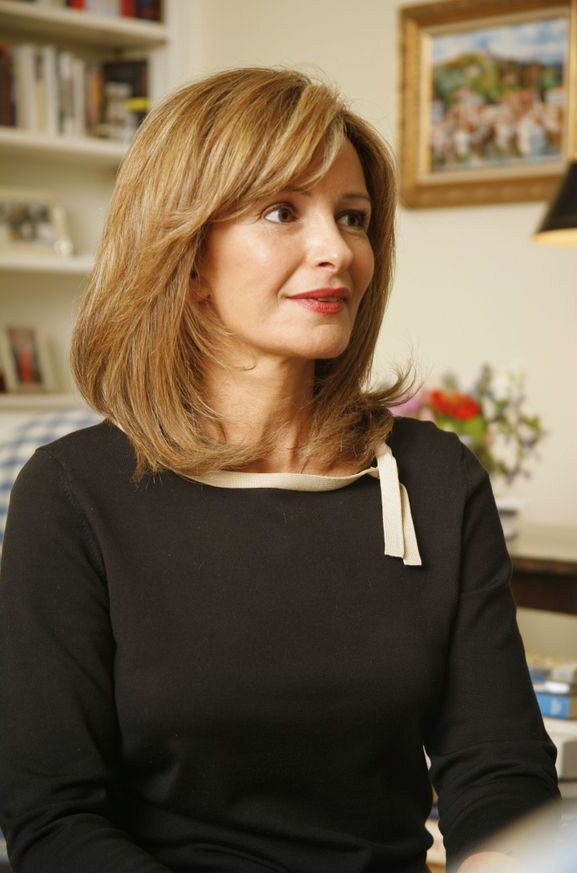

Debra Finerman.
Directrice du département international des Éditions du Mécène, elle accompagne les entreprises et les institutions hors de France, dans leur langue.

Américaine, diplômée de science politique à UCLA et Master of Art de Christie’s, Debra Finerman dirige le département international des Éditions du Mécène.
Elle est l’interlocutrice des entreprises et des institutions qui souhaitent créer leur livre hors de France : un accompagnement dans leur langue, où qu’elles soient dans le monde, de la conception de l’ouvrage à sa fabrication et à sa diffusion.
Ancienne journaliste — notamment pour The Hollywood Reporter (édition mensuelle), Capital Style et Beverly Hills Magazine —, elle partage sa vie entre les États-Unis et Paris, et écrit sur la France pour le magazine en ligne My French Life.
Romancière, elle publie en 2007 chez Random House (Three Rivers Press) Mademoiselle Victorine, roman consacré à Victorine Meurent, modèle et muse de Manet, traduit en six langues. Suivent You Lucky Dog, paru en français aux Éditions du Mécène sous le titre Quelle belle vie de chien, et, avec Patrice de Moncan, Leurs vins préférés puis Histoire Amoureuse du Vin.
Avec elle, les trois façons de publier proposées par la maison — votre propre livre, le mécénat de création ou la personnalisation d’un ouvrage du catalogue — sont ouvertes aux clients internationaux.
Ses livres.
Journaliste de formation, Debra Finerman est aussi romancière, et coautrice avec Patrice de Moncan de deux livres consacrés au vin.

Une direction à deux voix.
La conception des ouvrages et leur rayonnement international sont portés par deux interlocuteurs distincts.
Patrice de Moncan
Doctorat d’économie, licence d’histoire. Dirige la conception de chaque ouvrage, du choix éditorial à la maquette.
Découvrir son parcoursDebra Finerman
Américaine, diplômée de science politique à UCLA, Master of Art de Christie’s. Pilote les projets et les clients hors de France.
Your book, in your language.
Since 1987, Les Éditions du Mécène has created more than 250 books for leading French and international companies and prestigious cultural institutions.
Présenter votre projet